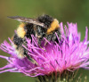
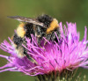

Neuseelandreise
Fox Gletscher
Der Fox-Gletscher (offizielle Bezeichnung: Fox Glacier/Te Moeka o Tuawe. englisch Fox Glacier, Māori: Te Moeka o
Tuawe) ist ein Talgletscher nahe der Westküste der neuseeländischen Südinsel.
Er liegt innerhalb des
Westland-Nationalparks. Sein Nährgebiet befindet sich im Bereich der höchsten Gipfel der Neuseeländischen Alpen
und wie auch der 25 km weiter nördlich liegende
Franz-Josef-Gletscher fließt er von dort die steile Westflanke
des Gebirges hinab und reicht deshalb weit hinunter, fast bis auf 300 m.
(Quelle: Wikipedia )